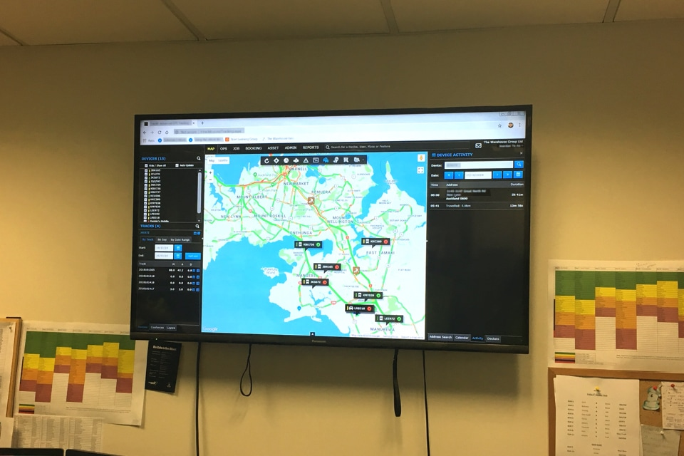

Discovery
While we had a good understanding of the customer journey, we didn’t have a view of staff journeys which is a crucial part of delivery service. We started our discovery with interviewing staff members (store, fulfilment, contact centre and delivery team members) to understand current journeys, pain points, systems & processes they use, across all brands and both in-store and online channels.

